Organizing Committee
October 23-26, 2022
General Chair
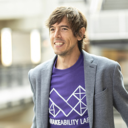
Jon E. Froehlich, University of Washington, USA
generalchair-assets22@acm.org
Technical Program Chairs
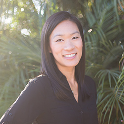
Kristen Shinohara, Rochester Institute of Technology, USA
tpc-assets22@acm.org
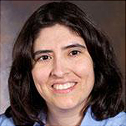
Stephanie Ludi, University of North Texas, USA
tpc-assets22@acm.org
Treasurer and Registration Chairs
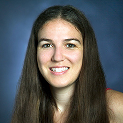
Kyle Rector, University of Iowa, USA
treasurer-assets22@acm.org
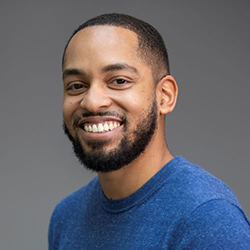
Martez Mott, Microsoft Research, USA
treasurer-assets22@acm.org
Proceedings Chairs
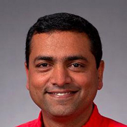
Raja Kushalnagar, Gallaudet University, USA
proceedings-assets22@acm.org
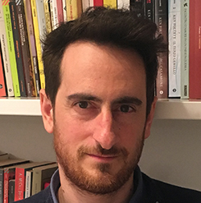
Sergio Mascetti, University of Milan, Italy
proceedings-assets22@acm.org
Hybrid Experiences Chair
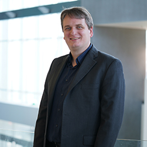
Christian Vogler, Gallaudet University, USA
hybrid-assets22@acm.org
Local Chairs
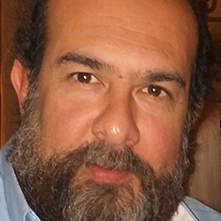
Alexandros Pino, National and Kapodistrian University of Athens, Greece
local-assets22@acm.org
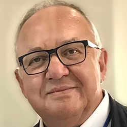
Georgios Kouroupetroglou, National and Kapodistrian University of Athens, Greece
local-assets22@acm.org
Local Accessibility Chairs
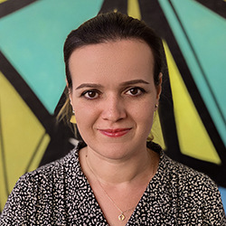
Paraskevi Riga, National and Kapodistrian University of Athens, Greece
local-assets22@acm.org
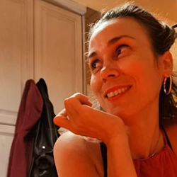
Ariadni Velissaropoulou, National and Kapodistrian University of Athens, Greece
local-assets22@acm.org
Web and Graphics Design Chairs
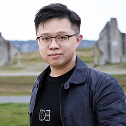
Liang He, Purdue University, USA
web-assets22@acm.org
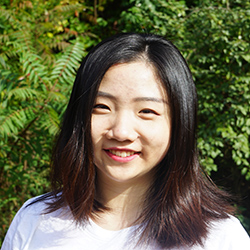
Junhan (Judy) Kong, University of Washington, USA
web-assets22@acm.org
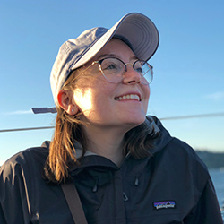
Jaylin Herskovitz, University of Michigan, USA
web-assets22@acm.org

Jason Wu, Carnegie Mellon University, USA
web-assets22@acm.org
ACM Partnerships Chair
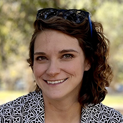
Stacy Branham, University of California - Irvine, USA
acm-partnerships-assets22@acm.org
Global Outreach Chairs
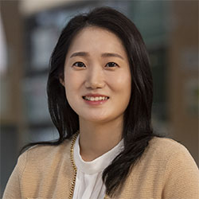
Uran Oh, Ewha Womans University, Korea
global-outreach-assets22@acm.org
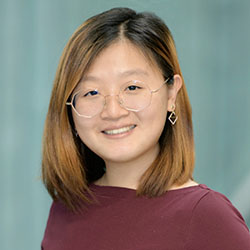
Yuhang Zhao, University of Wisconsin-Madison, USA
global-outreach-assets22@acm.org
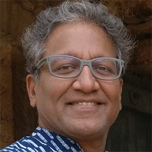
Manohar Swaminathan, Microsoft Research, India
global-outreach-assets22@acm.org
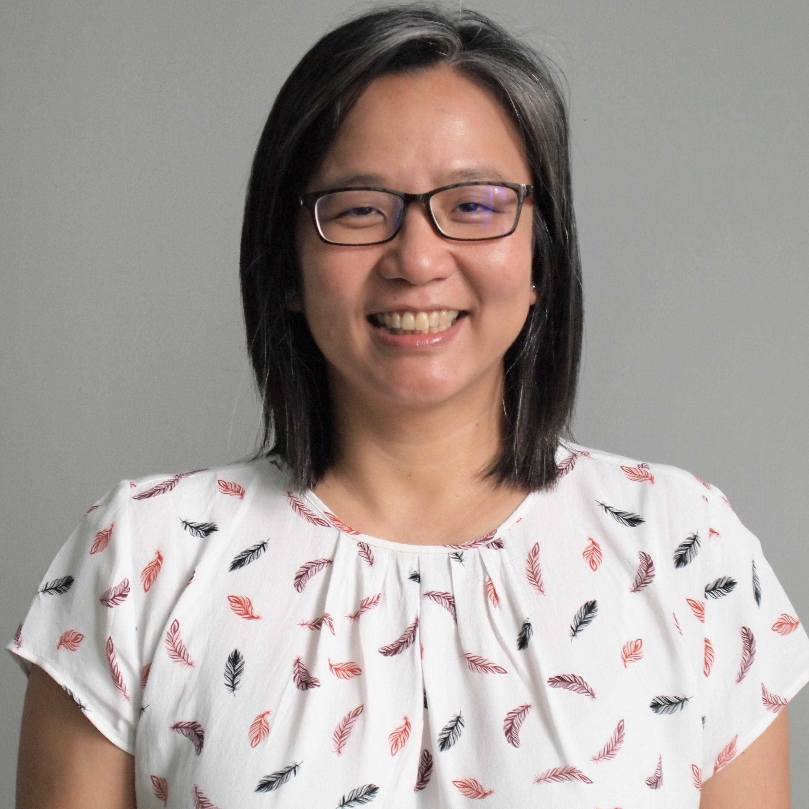
Pin Sym Foong, National University of Singapore, Singapore
global-outreach-assets22@acm.org
Workshop Chairs
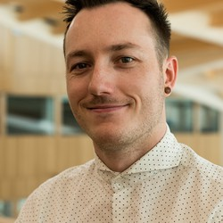
Kyle Montague, Northumbria University, England
workshops-assets22@acm.org
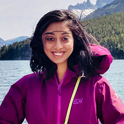
Sowmya Somanath, University of Victoria, Canada
workshops-assets22@acm.org
Education Outreach Chairs
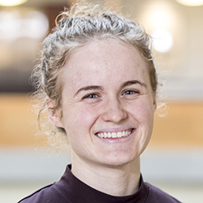
Anne Spencer Ross, Bucknell University, USA
education-assets22@acm.org
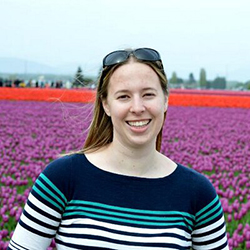
Catie Baker, Creighton University, USA
education-assets22@acm.org
Equity and Belonging Chair
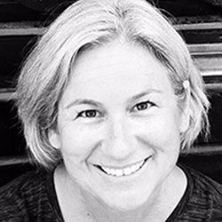
LouAnne Boyd, Chapman University, USA
equity-assets22@acm.org
John Guerra Gomez, Northeastern University - Bay Area, USA
equity-assets22@acm.org
Virtual Chairs
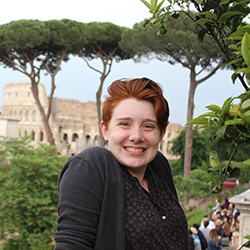
Emma McDonnell, University of Washington, USA
virtual-assets22@acm.org
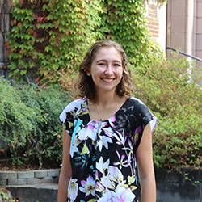
Kelly Mack, University of Washington, USA
virtual-assets22@acm.org
Benjamin Tannert, City University of Applied Science Bremen, Germany
virtual-assets22@acm.org
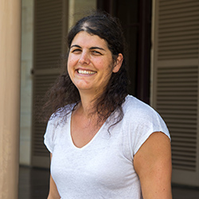
Laurianne Sitbon, Queensland University of Technology, Australia
virtual-assets22@acm.org
Accessibility Chairs
J. Bern Jordan, University of Maryland, USA
access-assets22@acm.org
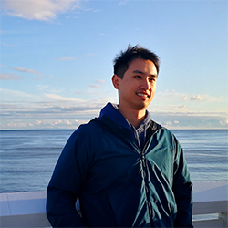
Lei Shi, Google, USA
access-assets22@acm.org
Mentoring Chairs
Sayan Sarcar, Birmingham City University, England
mentoring-assets22@acm.org
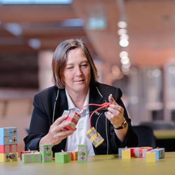
Kirsten Ellis, Monash University, Australia
mentoring-assets22@acm.org
Publicity Chairs
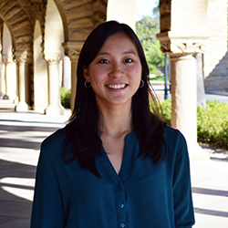
Alexa Siu, Adobe, USA
publicity-assets22@acm.org
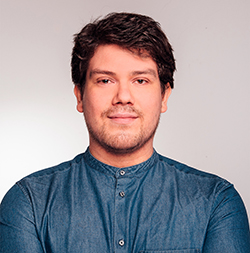
Arthur Theil, Birmingham City University, England
publicity-assets22@acm.org
Student Volunteer Chairs
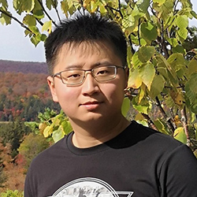
Franklin Mingzhe Li, Carnegie Mellon University, USA
sv-chairs-assets22@acm.org
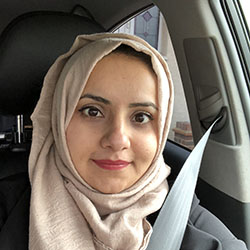
Maryam Banduka, University College London, England
sv-chairs-assets22@acm.org
TACCESS Special Issue Chair
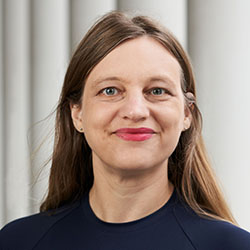
Maria Wolters, University of Edinburgh, Scotland
taccess-assets22@acm.org
Best Artifact Chair
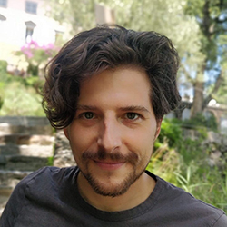
Dragan Ahmetovic, University of Milan, Italy
best-artifact-assets22@acm.org
Poster/Demo Chairs
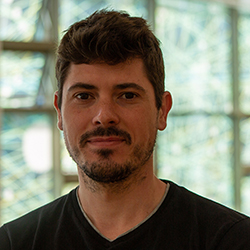
Hugo Nicolau, University of Lisbon, Portugal
poster-demo-assets22@acm.org
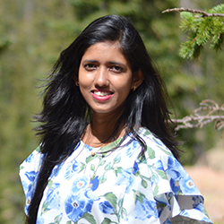
Taslima Akter, Indiana University - Bloomington, USA
poster-demo-assets22@acm.org
Doctoral Consortium Chairs
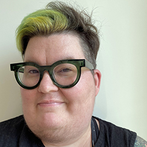
Katta Spiel, Vienna University of Technology, Austria
dc-chairs-assets22@acm.org
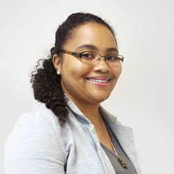
Aqueasha Martin-Hammond, Indiana University - Purdue University Indianapolis, USA
dc-chairs-assets22@acm.org
Student Research Competition Chairs
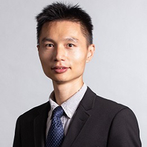
Mingming Fan, The Hong Kong University of Science and Technology, China
src-chairs-assets22@acm.org
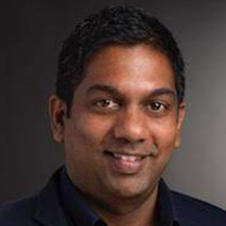
Roshan Peiris, Rochester Institute of Technology, USA
src-chairs-assets22@acm.org
Experience Report Chairs
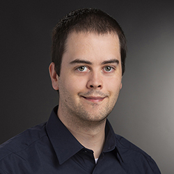
Garreth Tigwell, Rochester Institute of Technology, USA
experience-reports-assets22@acm.org

Kathryn (Kate) Ringland, University of California - Santa Cruz, USA
experience-reports-assets22@acm.org